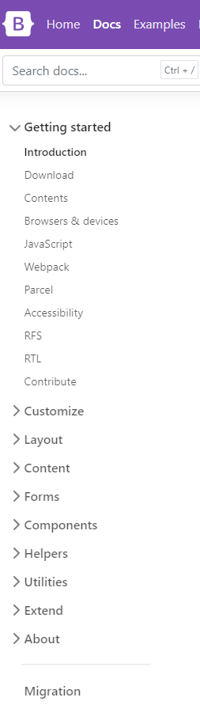

DICAS
Plugins e Nuggets
O que são Plugins e Nuggets
Os pluggins e nuggets são como as extensões do navegador que estamos tão acostumados a utilizar durante nossa rotina, são ferramentas que integramos aos nossos projetos, seja por meio de instalação de pacotes ou por meio de ferramentas internas da IDE que estiver utilizando. Suas funções são infinitas, pois cada uma tem seu propósito. Nessa área serão apresentadas algumas das mais comuns e que atendem a maioria dos projetos.
23 Extensões do VS Code para 2020
Principais extensões
GitLens
O GitLens sobrecarrega o Git dentro do VS Code e revela informações sobre o repositório do projeto em questão. Ele ajuda você a visualizar a autoria do código rapidamente por meio de anotações do Git blame e CodeLens. Apresenta informações valiosas por meio de, como quem realizou a alteração mais recente em determinada parte do código, e quando tal alteração foi feita.
Também dando a opção de voltar no histórico para obter mais informações sobre como e por que o código evoluiu. Explore sem esforço a história e a evolução de uma base de código.
GitCopilot [APIs]
O Copilot é uma Inteligência Artificial voltada para auxiliar o programador a codar mais rápido com menos esforço por meio de sugestões de código com base no que é usado com mais frequência no mundo da programação.
O Copilot dá as sugestões com base no contexto do arquivo que está sendo editado e dos outros arquivos vizinhos, tentando sugerir a linha de código ou até mesmo a função que se encaixe melhor, e ele é capaz de fazer isso pois foi construído com base em códigos publicamente abertos.
O GitHub Copilot atualmente tem suporte para Visual Studio Code, Neovim, e as IDEs da JetBrains. Para poder ter acesso basta se cadastrar na fila de espera com sua conta do github.
ESLint
O ESLint é um plugin de padronização de projetos JavaScript que refatora o código afim de seguir as boas práticas de programação e evitar bugs. Tendo sua configuração padrão, mas com a possibilidade da customização da configuração para caso ele não englobe todas as suas necessidades, ou se tiver alguma das configurações padrões que não te agrade
Colorize
O colorize é uma ferramenta voltada para o CSS, que permite que você veja no seu código qual cor um código hex, com #73C990, ou um código RGB ou RGBA, como rgb(20, 92, 60), representam sem precisar de sites ou ferramentas fora do seu código para isso
Clean code
O que é Clean code e S.O.L.I.D
Clean code são as boas práticas gerais para o desenvolvimento de softwares, que têm como principal objetivo agilizar e facilitar o processo de leitura do código, para que seja uma experiência prática para quem necessite ler o que foi feito para uma manutenção, por exemplo, ou até mesmo para a pessoa que desenvolveu e precisa fazer alterações posteriormente não ficar perdido entre variáveis em português e inglês, funções com padrão camelcase e paschalcase
SOLID é um acrônimo criado por Michael Feathers, após observar que cinco princípios da orientação a objetos e design de código — Criados por Robert C. Martin (a.k.a. Uncle Bob) e abordados no artigo The Principles of OOD — poderiam se encaixar nesta palavra.Esses princípios ajudam o programador a escrever códigos mais limpos, separando responsabilidades, diminuindo acoplamentos, facilitando na refatoração e estimulando o reaproveitamento do código.
-
S — Single Responsiblity Principle:
Princípio da responsabilidade única -
O — Open-Closed Principle:
Princípio Aberto-Fechado -
L — Liskov Substitution Principle:
Princípio da substituição de Liskov -
I — Interface Segregation Principle:
Princípio da Segregação da Interface -
D — Dependency Inversion Principle:
Princípio da inversão da dependência
Clean code e S.O.L.I.D
O que fazer caso encontre um erro novo
Como navegar em uma documentação
Normalmente ferramentas, linguagens, IDEs e bibliotecas têm em seus sites uma área voltada para documnteção, área essa onde se encontram formas de instalação, usos mais comuns, perguntas frequentes e muitas vezes exemplos básicos de aplicações relacionadas ao tópico.
Para navegar em uma documentação, é só identificar se o que está procurando é um tópico, ou tem relação direta com os tópicos de destaque, que normalmente se encontram no canto esquerdo da tela. Como podemos ver no exemplo ao lado, onde temos o menu lateral do bootstrap com informações de como instalar, seus principais componentes exemplos detalhados de como utilizar cada um deles.
Stack Overflow
Caso apenas a documentação não seja o suficente para te direcionar, existem outras ferramentas disponíveis para te guiar, o Stack Overflow é uma delas.
O Stack Overflow é uma plataforma voltada para a área da tecnologia que se baseia em fóruns, onde as pessoas publicam suas dúvidas, erros e conhecimentos abertamente para que a comunidade interaja com comentários que agreguem mais conhecimentos. Tanto as respostas quantos os comentários podem receber algo semelhante ao like e deslike do Youtube, como forma de destacar as perguntas e respostas mais relevantes
-
